The everyday basics
Pencils, folders, glue sticks, crayons, markers. Nothing fancy, just the stuff a classroom actually burns through every week.
Student-led Fairfax County, Virginia
Generation Supply is a student-led nonprofit based in Fairfax County. We collect school supplies from affluent schools, then deliver them to high-need schools throughout the county.
Started by a freshman with a cardboard box. Now supplying three schools and counting.
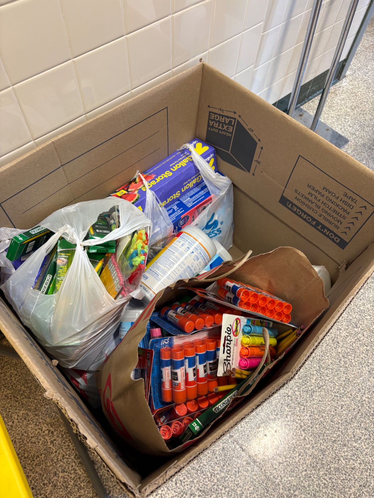
Our mission
Generation Supply is a student-led nonprofit based in Fairfax County, Virginia. We partner with local affluent schools to collect school supplies through 2–4 week-long supply drives, then redistribute the raised supplies directly to high-need schools throughout the county. Since launching in April 2026, we've partnered with six schools in total, 3 donors and 3 recipients, we've raised over $3,100 worth of supplies, supported over 1,800 students from low-income families throughout Fairfax County, and partnered with nonprofits and companies from Northern Virginia and Washington DC.
Pencils, folders, glue sticks, crayons, markers. Nothing fancy, just the stuff a classroom actually burns through every week.
All supplies that we distribute are donated by a school or business supporting our mission.
We started with one donor school in April 2026. After two months, we built partnerships with two more donor schools and three Title 1 recipient schools, as well as two nonprofits based in Washington, DC.
How it works
Nothing complicated. We collect what people give, count it carefully, and drive it to the schools that need it.
We set up a Generation Supply branded donation box at a partner donor school, then families, teachers, and students donate any surplus supplies they may have during the timeframe of the supply drive.
Once a week for every week during the timeframe of the supply drive, we do inventory on everything that was donated that week. That's how we know what we have and who to donate to.
Lastly, we donate raised supplies directly to high-need schools across Fairfax County to ensure maximum impact.
Our impact so far
We only started in April 2026. Everything below came from our neighbors in a few months.
Stories from the community
Our first drive started at Greenbriar East in April 2026 with a box by the front office, a flyer in every teacher's mailbox, and a spot in the school newsletter. Two weeks later, the community had donated over $800 worth of school supplies.
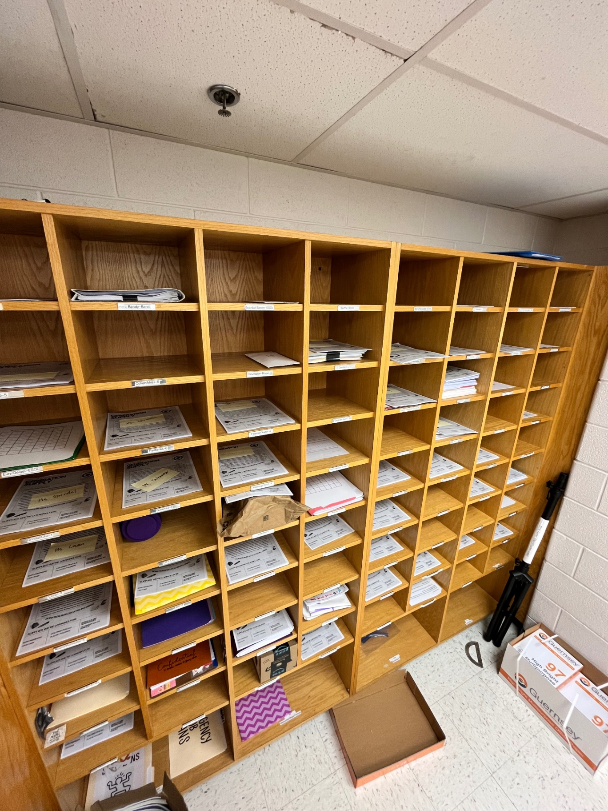
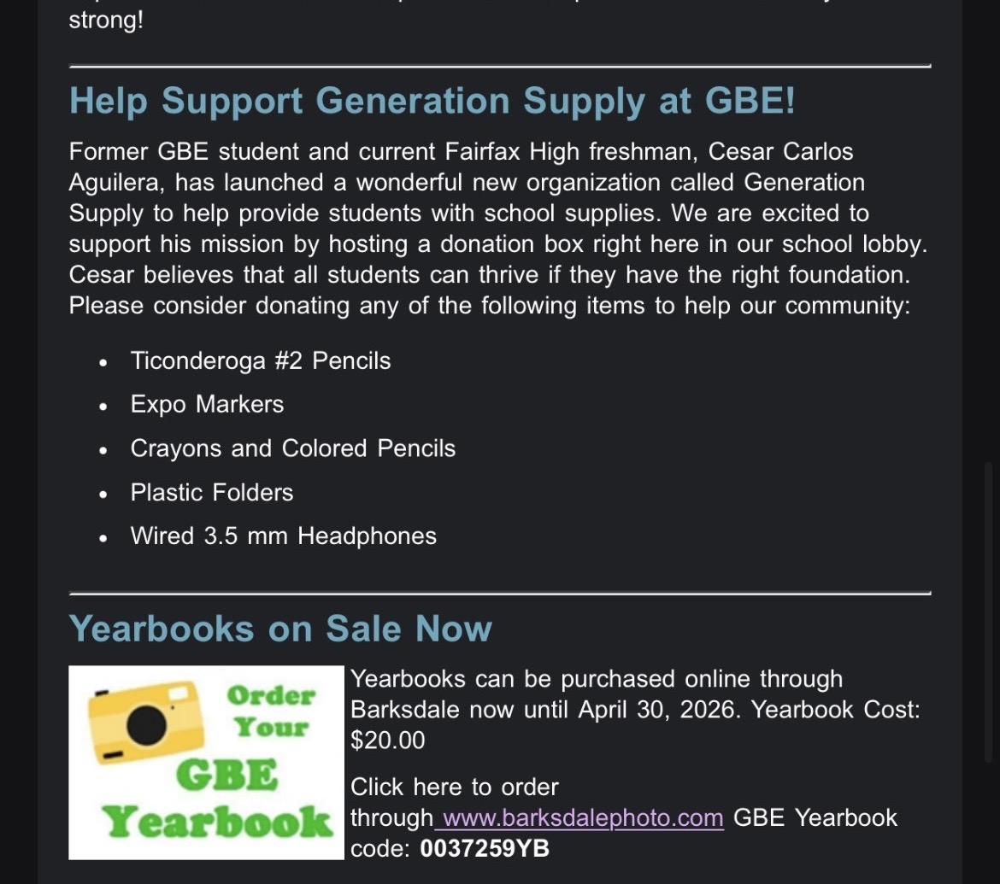
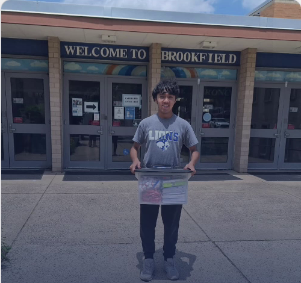
A big day for us
After weeks of collecting and organizing supplies from our Greenbriar East and Navy Elementary drives, our team delivered the first batch to Brookfield Elementary: a Title 1 school where 82% of students come from low-income families. It was the moment months of planning and execution finally reached the students it was meant for.
Brookfield was just the first donation. Since then, we've made donations to other high-need Title 1 schools such as Providence and Graham Road.
“Former GBE student and current Fairfax High freshman Cesar Carlos has launched a wonderful new organization called Generation Supply to help provide students with school supplies. We are excited to support his mission by hosting a donation box right here in our school lobby.”
Programs & initiatives
A stocked pencil box helps, but it doesn't close a learning gap on its own. Here's what we're building next.
Running now
The core of what we do: collection boxes at partner schools that keep classrooms stocked all year long.
Launching August 2026
Our first student-run club is confirmed at Fairfax High School for the 2026–27 school year, and we're writing the playbook so other high schools can copy it.
In development
Free, student-led tutoring for the kids we already supply, because a glue stick can't teach fractions.
In development
One-on-one help for families navigating the school system, from picking courses to speaking up for their kids, so every student has a champion in their corner.
Our growing network
Every school we add means more supplies coming in, or more kids getting them. Here's the map so far.
Our pilot donor school, and proof our whole system works. Our supply drive there raised over $800 worth of supplies in 2 weeks. The drive ran from April 15–30.
Our 2nd donor school, launched two months after the first. The drive ran from June 1–17 and raised over $900 worth of supplies in its 2 week-long timeframe.
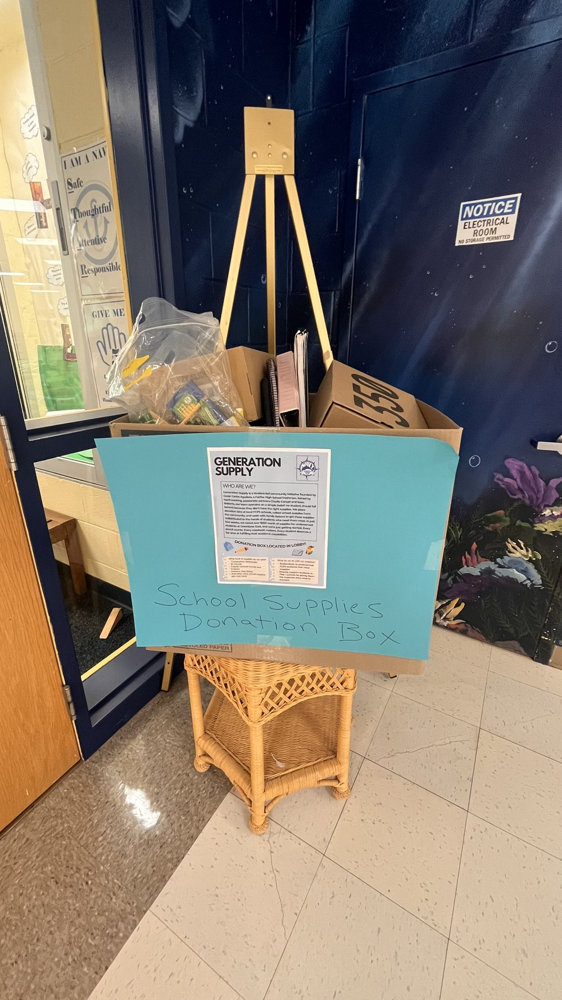
A Title I school and our highest-need partner, and the first school we delivered to. Cesar drove the first batch over himself on June 11, 2026.
Our second delivery, and the first of two drops that carried the network past the summer and into the new school year.
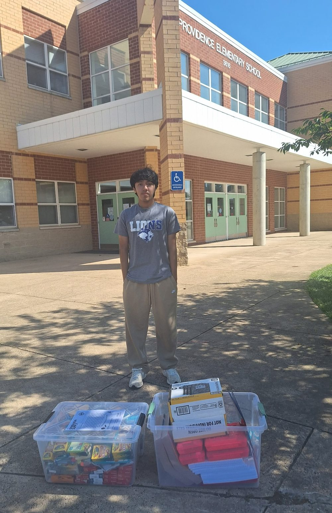
Delivered just before the new school year started, extending our reach to more classrooms in the Falls Church area.
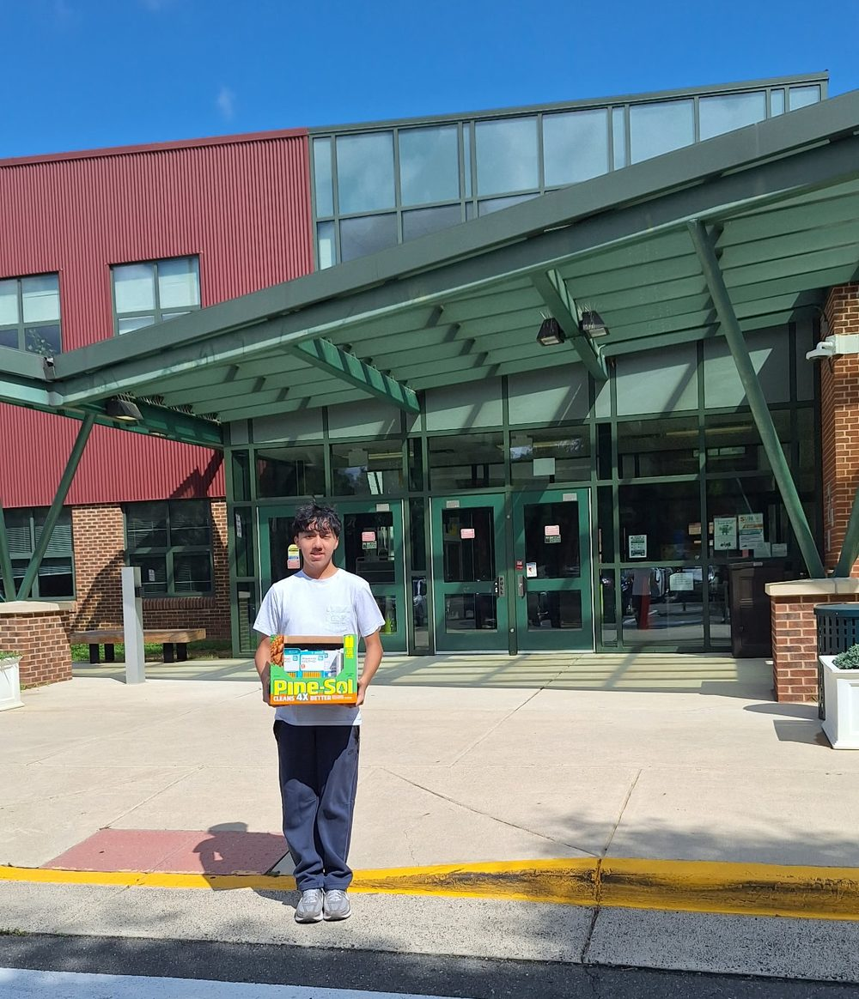
Your school could be stop number six. Talk to us.
The team
No office, no staff. Just five students who kept seeing classmates go without and decided to do something about it.


Partners
 Educate Fairfax — Fairfax County's leading education nonprofit, amplifying our regional reach.
Educate Fairfax — Fairfax County's leading education nonprofit, amplifying our regional reach.
 Chick-fil-A Fair Lakes — Spirit Night on September 17, 2026, directly funding our supply drives.
Chick-fil-A Fair Lakes — Spirit Night on September 17, 2026, directly funding our supply drives.
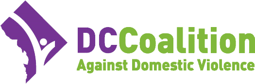
DC Coalition Against Domestic Violence — Helping us get supplies to children in families rebuilding after crisis.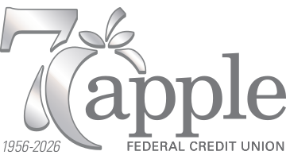
Apple Federal Credit Union — A local credit union backing our drives across Fairfax County.Want to see your business here? Become a partner →
Gallery & events
A look at the deliveries, partnerships, and press that got us here — and what's coming up next.
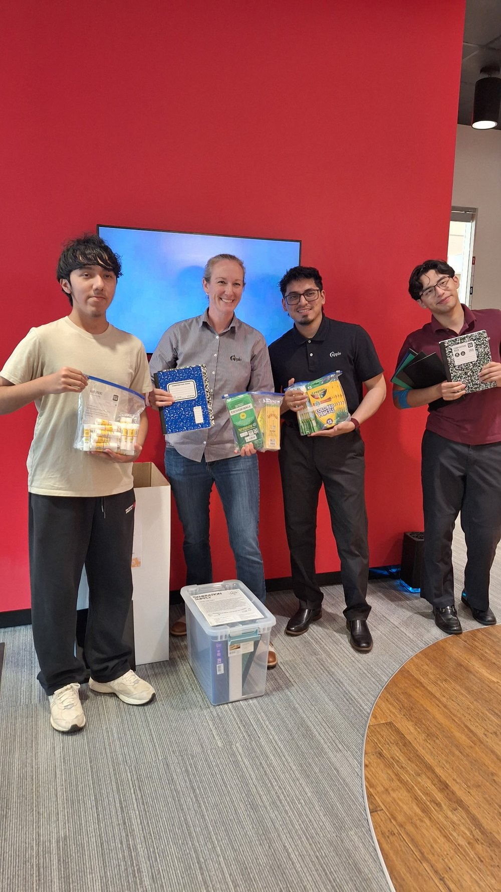
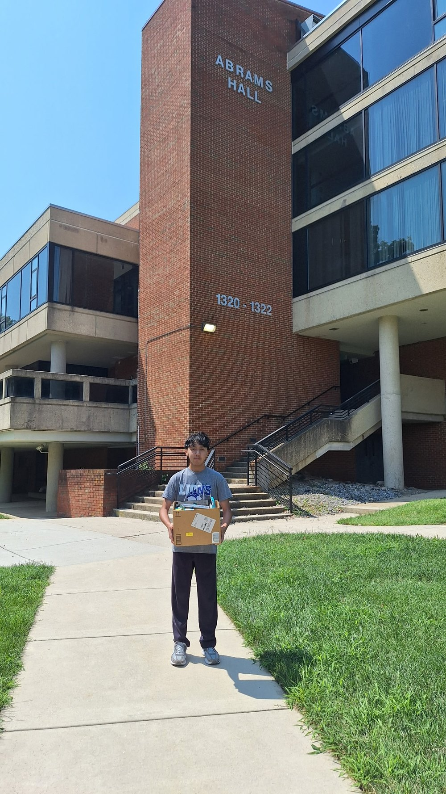
Upcoming
A portion of sales goes straight to our next supply drive for Greenbriar East.
Follow our story
Drop days, partner shout-outs, and whatever else we're up to that week. It all goes on Instagram first.
Get involved
Got a drawer of extra supplies? A free Saturday? A business that wants to help? Any of those can put a kid at their desk ready to learn.
Is your school interested in becoming a donor site? We'll help set up a collection box, provide flyers, and handle pickup and delivery to schools that need it most.
Start a driveRestaurant fundraisers, in-kind donations, or something else — if your business wants to support students in Fairfax County, we'd love to talk.
Get in touchSchools, nonprofits, and businesses can host a supply drive, sponsor a fundraiser night, or connect us with families and students who need support.
Become a partnerFollow us, share a post, or tell a school administrator about us. Most of our new partnerships start with someone making an introduction.
@generationsupplyContact & support
Whether you're a parent, teacher, school admin, or business, we'd love to hear from you. We read everything.